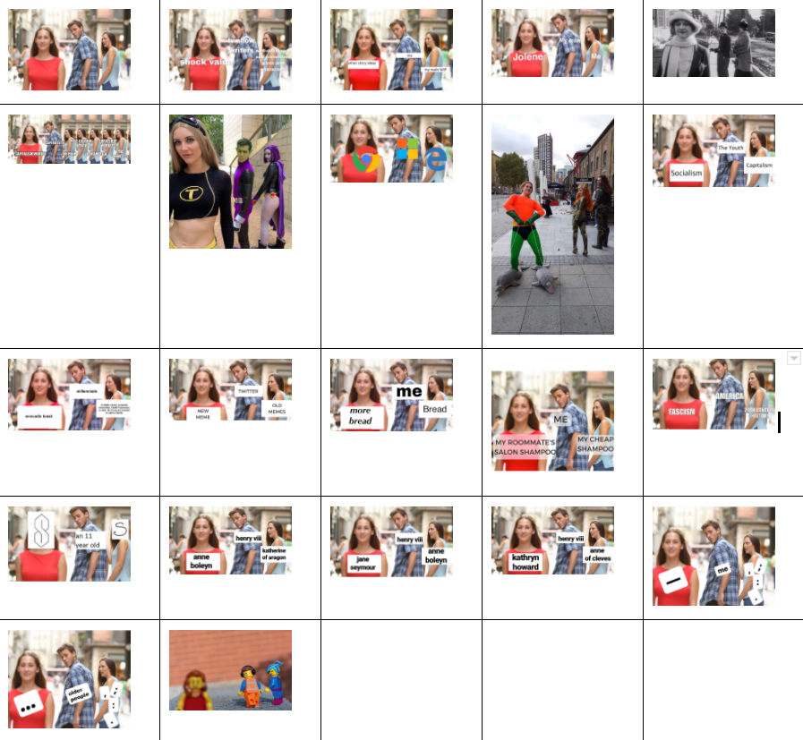

Iconographic Tracking:
Genre Coding and Data Vizualization
By Kristina Bowers
The first step to deploying iconographic tracking research methods is to select an image, icon, meme, or other visual artifact that has circulated widely or “gone viral.” Once selected, the scope of research can begin to take shape using guiding questions such as: How far has this icon circulated around the web? What #hashtags or comments are being used in conjunction with this icon? What rhetorical function(s) does this image precipitate/enact?
These are the types of questions that have led rhetorician, scholar and University of Colorado Boulder professor Dr. Laurie Gries to create "iconographic tracking". Iconographic tracking (IT) is a qualitative research method that tracks how viral images transform on and off the Internet in addition to tracing the real, social consequences these images may engender along the way. This tutorial will explain how to code metadata as part of the IT method, create unique visualizations using these codes, and expand on Gries' methods. In her webtext, “Mapping Obama Hope”, Gries explains how she used software like Google Fusion Tables to “...easily upload, organize, query, and share data sets” and “...categorize, manipulate, and export this data set for specific and custom digital visualizations” (citation). Due to the discontinuation of the Google Fusion Tables (software? Program? Internet tool?), I present an alternative research workflow that combines the functionality of Google Sheets and the data analysis and visualization capabilities of Atlas.ti software. This tutorial will show users how to code and visualize metadata generated from raw data sets. Metadata can include geographic location, media type, time circulated, etc. These characteristics can be visualized together or separately to understand how images are moving and transforming rhetorically in time and space.
In this tutorial, I will be using a sample data set of the "Distracted Boyfriend" meme to demonstrate how to code for genre and create visualizations of the resulting patterns and trends. This meme originated from a stock photo taken in 2015 in Gerona, Spain by photographer Antonio Guilliam. Originally titled, “Disloyal Man with His Girlfriend Looking at Another Girl”, this object-labelling meme typically communicates a value judgement, or preference, of one thing/person/idea v. another thing/person/idea.** This meme is useful to this tutorial due to its popularity, virality, and the sheer number of remixes that can be found across the Internet.
I chose Atlas.ti over Zotero for tagging and organizing images due to way it enables researchers to code directly onto images, providing greater ease of use, and a more visual interface. This tutorial begins review of the methods and literature surrounding IT, and then I provide a coding tutorial with 2 instructional videos, and additional resources.
Methods and Literature Review
The phrase “iconographic tracking” (IT) was coined by Laurie Gries to describe a way to trace and analyze the "circulation, transformation, and consequentiality of images across genres, mediums, and contexts" (Gries, "Iconographic tracking: A Digital" 2013 pg. 332). This methodology builds on theories from circulation studies, visual rhetoric, new media, and new materialism (Gries, "Iconographic tracking: A Digital" 2013 pg. 332-333). The research questions and concerns driving the evolution of this methodology focus specifically on viral image distribution and circulation, intellectual property law, and the ways in which humans and non-humans interact with images in real, consequential ways (Gries 2013 pg. 335). In her article “Iconographic Tracking: A Digital Research Method for Visual Rhetoric and Circulation Studies” and her chapter “Iconographic Tracking” from Still Life with Rhetoric Gries walks through the main research steps of this methodology, emphasizing the power of viral artifacts to create and, in Bruno Latour’s words, “reassemble the social” (“Iconographic Tracking: A Digital” 333). Gries is concerned with the futurity of images, how they circulate and influence beyond the creator’s wildest imaginings of consequence (“Iconographic Tracking: A Digital” 337). Gries’ method is recursive, meandering, and open-ended which accurately reflects the unpredictable, viral spread and remix of images in today’s digital environment.
For Gries, her work provides a pragmatic “how-to” for the tracking of viral images (“Iconographic Tracking” 109).
“...iconographic tracking is specifically designed to elucidate how images become rhetorical and iconic in the sense that once actualized in multiple versions, they become not only vital actants capable of catalyzing change and producing space (and time) but also readily recognized and culturally and/or politically significant to a wide cultural group” (Gries, "Iconographic Tracking" 110).
Notable examples of research using iconographic tracking includes Gries’ case study on the “Obama Hope” image created by Shepard Fairey from a photograph taken by Mannie Garcia (“Iconographic Tracking: A Digital” 332). Gries studied how this image transformed in genre, rhetorical consequence, media, location across the globe, and many other categories and subcategories that revealed just how influential this image became to so many people for many different reasons (“Iconographic Tracking: A Digital” 332). Other prominent researchers such as Natalia Mielczarek have deployed IT to study viral Internet images such as the “Pepper-Spraying Cop” and a photograph of Aylan Kurdi, a 3 year old whose body washed up on a Turkish beach after dying in an overseas journey (67; 1). In her case study of the “Pepper-Spraying Cop,” Milezerack aims to continue to uncover images’ - specifically memes’ - signifying power (68). Mielzerack investigates the ways in which this meme was weaponized and caused consequences in the real world while contributing to collective memory at different times, and in different contexts (69). Along with protests and police militarization, Mielzerack also studies similarly serious cultural issues in her analysis of the Kurdi memes (2). Along with political protest and catalyst for action, Mielzerack characterizes the “dead Syrian refugee boy” memes as a form of grieving (11-13).
In terms of the effect of images on human subjects, Nicole Smith Dahmen employs qualitative research methods to measure and study how iconic images are recognized, acknowledged, and received emotionally by people (453). Like Mielzerack, Dahmen also touches on collective memory and considers the consequences and value of this memory (457). Dahmen looks at how iconic images shape national identity, empathy, and the overall importance of certain iconic images (462-464). Dahmen notes that while these findings are important, “Asking someone if they think an image would lead to action is not the same thing as actually determining if an image led to action” (470). This act of determining an image’s influence on, and part in, public action is part of what Gries, and others, are trying to accomplish with IT. For a more traditional lens of visual rhetorical analysis, look to Finnegan’s “Studying Visual Modes of Public Address” for an analysis of how popular images affected public views and identifications. For a more in depth look at rhetorical existence in our daily lives plus a focus on OOO, refer to Barnett’s book, *Rhetoric, Through Everyday Things*. Multiple contributors trace the active power of things and move away from human-centered rhetorical study and thought.
Tutorial
This tutorial will show you how to (1) organize your image data in Google Sheets, (2) generate metadata about these images, (3) upload your images into Atlas.ti, tag/code the images with metadata, and (4) create visualizations of your image’s transformations. The use of Google Sheets to organize data is adapted from Gries' example exercise with the image of Malala Yousafzai. I've taken advantage of the Wayback Machine - an online archival tool - to archive both the webpage and the image jpeg url. This process is necessary in order to archive data in the event of a loss or corruption of original data. It is also beneficial to have this data available for future use by other researchers and scholars.
For this example, I will be coding/tagging specifically for the genre of each of my images. I have collected a small set of images depicting, or related to, the "Distracted Boyfriend Meme". For further reading on the origin of this meme see (https://www.wired.com/story/distracted-boyfriend-meme-photographer-interview/). Below, you can view the images in my data set including the original stock photo, resulting iterations/remixes of the meme, as well as a few examples of recreations using human actors. If you hover over the image you will see a descriptive title that is useful for human readers.
The DB meme, like many other object-labelling memes, is uniquely suited to the IT method because it can be considered a "single multiple image" - as Gries calls the iterations of the Obama Hope image she studied (Iconographic Tracking 108). The DB meme is different from the Obama Hope image in that the DB meme generally keeps the same background/original image and adds text/pictures to the characters while “Obamacons” tend to use the same (? composition/color scheme/what is the word….) but the character/person (focus/main) changes often.
Creating Metadata for Image Collection
This section demonstrates how to go from data collection to analysis by creating visuals that show trends, patterns, and relationships among the images in a collection. For this tutorail I have gathered a small collection of images for the “Distracted Boyfriend” meme. If you are following this tutorial with your own collection of images, you should have already completed steps 1 and 2 of Iconographic Tracking
This section assumes readers have already collected visuals, and have completed steps 1 and 2 above. The tutorial that follows focuses on research methods and activities in steps 3 and 4.
Video 1:
Video 2: